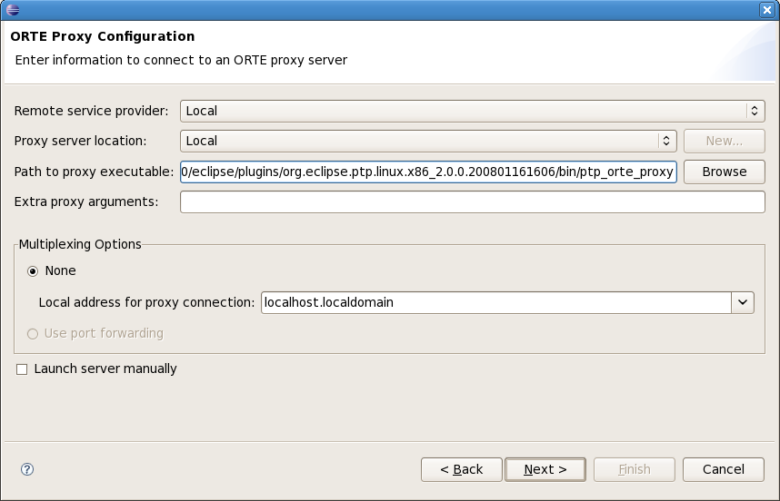
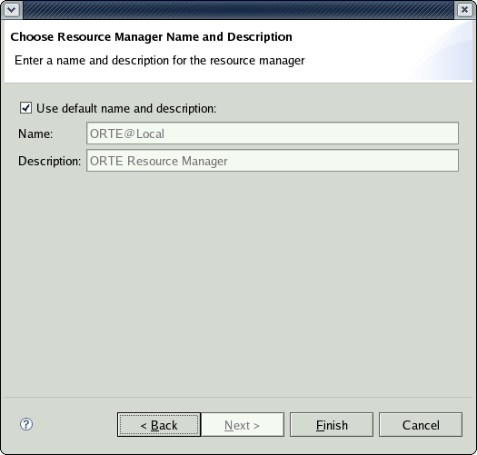
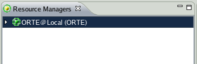

Topics include:
[needs updating] A Resource Manager controls resources for launching a parallel job. It could be a real job scheduling program, or the simplest is ORTE for a local? job.
In this example we will create a local resource manager for ORTE, in which the parallel program will be launched and run on the local machine.
First we will demonstrate creating a local resource manager, where PTP will control a cluster whose head node is on the local machine. This was the scenario that PTP 1.x handled. Eclipse and PTP are installed on the cluster head node.
Then we will demonstrate creating a remote resource manager, where Eclipse and PTP are on your local laptop or workstation, for example, and PTP controls a remote cluster. This is one of the most significant improvements in PTP 2.0. A small set of PTP components need to be installed on the remote node (need to list these, but basically the proxy and sdm -- the parts built by the "sh BUILD" step of ptp installation, need to be on the remote node.)
To create a resource manager, first open the PTP Runtime Perspective.
(Window -> Open Perspective -> Other... and then choose "C/C++" from the list of perspectives.)

Right-click in Resource Managers view and select
Add Resource Manager...

Choose the ORTE Resource Manager Type

Select Next
The Resource Manager configuration dialog is shown:

To configure the simple case of a local ORTE Resource Manager,
Select Local as the Remote service provider:

The proxy server location should be set to Local as well,
and
[verify?] the Path to proxy server executable
should point to your ptp_orte_proxy executable file.
It should probably be pointing to your plugins directory under your eclipse installation...
[update image to show it in plugins directory]
Under Multiplexing options, None should be selected
and the local address for proxy connection should be set to your local address
(either IP address x.x.x.x or localhost.localdomain).
Select Next or Finish.
If you select Next, the Choose Resource Manager Name dialog
is shown and you have the opportunity to change the displayed name
for this resource manager, if desired.

Select Finish.
The new Resource Manager should appear in the list of Resource
Managers.

In the PTP Runtime Perspective,
Right-click in Resource Managers view and select
Add Resource Manager...
Remote Resource Managers allow control via PTP of a remote target machine. This control can be accomplished via a variety of "remote service providers," which currently includes Eclipse RSE (Remote Systems Explorer) or the more lightweight PTP Remote Tools, which you probably installed with PTP.
The following instructions show how to configure a remote ORTE Resource Manager using the PTP Remote Tools.
Add a new resource manager, of type ORTE.
... missing step??? ...
In the ORTE Proxy Configuration dialog,
Select Remote Tools as the Remote service provider.
NEED NEW SCREENSHOT of remote selected
The proxy server location should be set to the hostname, or IP address, of the remote target machine.
Note: assure that sftp works on the remote machine, with a known userid and password.
The Path to proxy server executable
should point to your ptp_orte_proxy executable file on the target machine.
Select "New..." and a connection will be made to the target machine. Navigate to, and select, the ptp_orte_proxy executable,
which is probably located in the eclipse/plugins/org.eclipse.ptp.os.arch.xxxx directory, where os.arch is the
operating system and architecture of the remote target machine, and xxxx is the suffix on the plugins directory, probably
a release name and date suffix.
SCREENSHOT of navigating on remote target
It should probably be pointing to your plugins directory under your eclipse installation...
[update image to show it in plugins directory]
Under Multiplexing options, None should be selected
and the local address for proxy connection should be set to your local address
(either IP address x.x.x.x or hostname of your local machine).
This is the address with which the remote target machine will attempt to connect back with the local machine.
Select Next or Finish.
If you select Next, the Choose Resource Manager Name dialog
is shown and you have the opportunity to change the displayed name
for this resource manager, if desired.
Select Finish.
The new Resource Manager should appear in the list of Resource Managers.
Right mouse on the resource manager and select Start Resource Manager.

The Resource Manager item in the Resource Managers view
changes color to indicate it is running.

Now proceed to Launching a parallel application.
Note that the resource manager cannot be edited when it is running.
Stop it first and then
it can be edited.


Proceed to Launching a parallel application.